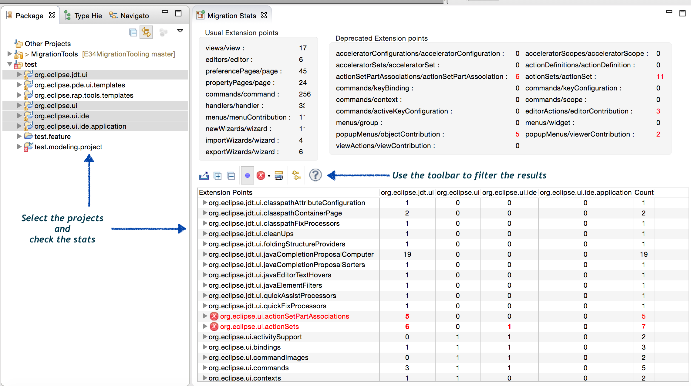

E34MigrationTooling
Some tooling to help to migrate from Eclipse 3 to Eclipse 4
This github repository contains some ideas of tools that could help to migrate from Elipse 3 to Eclipse 4.
The first tool is a statistic window to get information of your org.eclipse.ui dependencies.
Download the zipped update site (see link in upper right corner) and install the com.opcoach.e34.tools plugin. In the runtime workspace, load your E3 plugins and then open the view 'Migration Stats' (you can find it in the 'Plug-in Development' category or you can click in the relevant button in the toolbar).
You will get this view :
This view displays all the E3 extension points and a column for each plugin selected in your workspace. You will get the number of views, perspectives, commands, ... that are created by the selected plugin. You can select several plugins to get this information.
In the toolbar of the view, you can open the OPCoach form that will ask you questions about your migration and help you to make your decision
Deprecated elements and extension points are displayed with a red color. If you still used them, you will probably have problems for your migration.
The upper part displays statistics for the global selection : for instance, total number of views, preference pages, ... to be migrated.
You can of course send me an email to talk about it : olivier.prouvost@opcoach.com, or you can fill the Migration Evaluation Form on my web site.